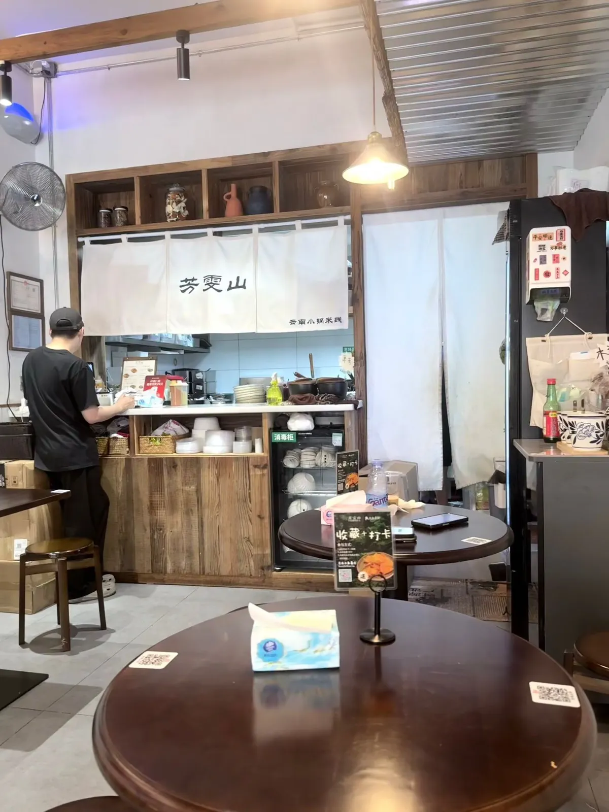
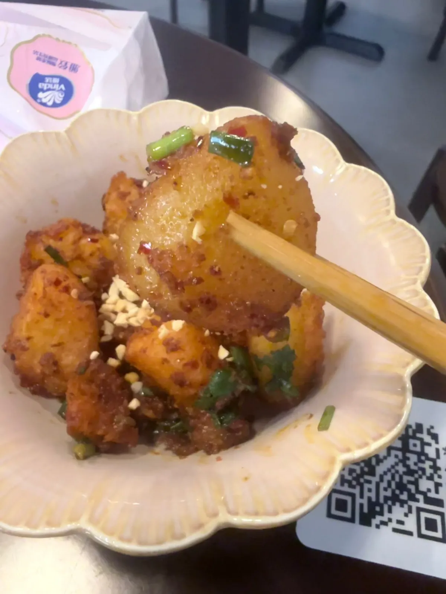
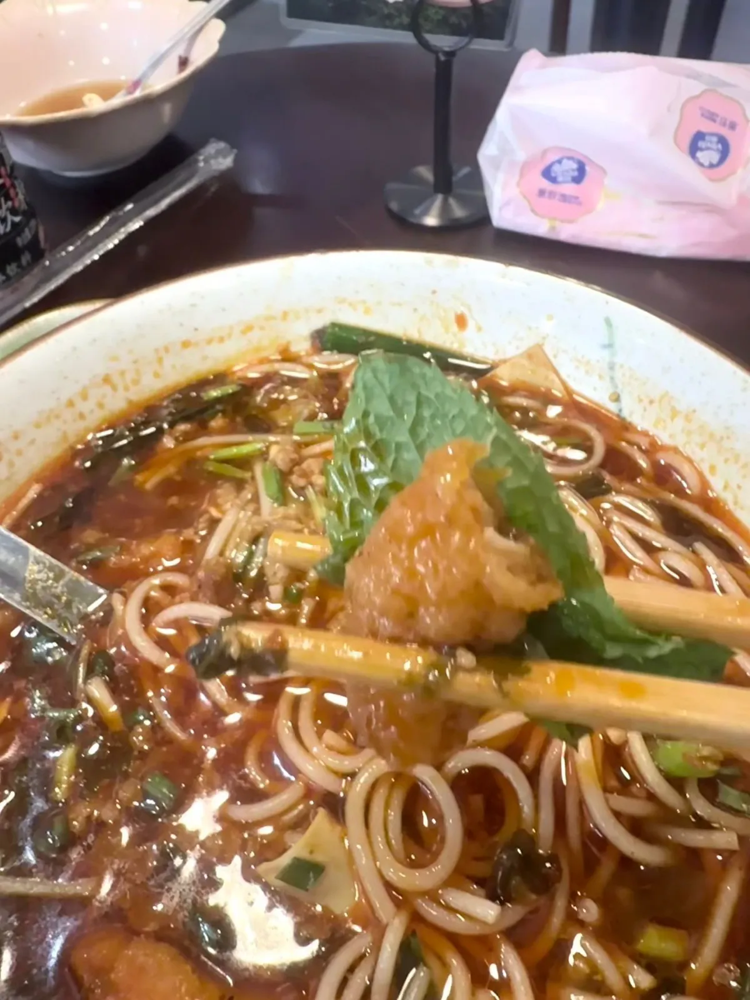

深圳桃園芳雯山：開咗一個月，上咗小食榜第一
利益披露
呢一餐係大眾點評提供嘅試單套餐，套餐原價 ¥54，平台全免，我冇畀過錢。呢篇唔係推薦文，係一次到訪嘅紀錄；你睇嘅時候應該自己扣返呢個折頭。
我去咗深圳桃園一間叫芳雯山嘅雲南小鍋米線。佢啱啱開咗冇耐（老闆同平台講嘅唔一致，下面會講），冇分店，就係一間舖。以下係我嗰日食咗咩、次序點、同我點判斷。我一次去一間、去一次，所以下面所有主觀嘢都係一個樣本，唔係結論。
呢間舖係咩狀態
到訪時嘅狀態
到訪日期：
開業時間：
分店：
套餐內容同價錢：
平台評分：
平台榜單：
平台分項：
平台人均：
營業時間：
去到點行：
等位：
上面嗰格嘅嘢全部會變，所以佢哋唔喺正文入面，而係抽咗出嚟獨立標明到訪日期同變動速度——實食紀錄呢個分區嘅四條硬規則之一就係咁。
營業時間、人均、分項評分同步行距離係平台商戶頁嘅二手資料，唔係商戶官方公布，資料塊底部有註明平台幾時更新過。同本站引政府網頁嗰種一手來源唔同級，所以分開標。
開業幾耐：兩個來源唔一致
我到訪嗰陣，老闆話開咗大約一個月。但大眾點評商戶頁顯示嘅收錄日期係 2026 年 5 月——以我八月去嗰次計，即係大約三個月。
兩個數我都寫出嚟，唔會夾一個出嚟。我冇能力判定邊個啱：收錄日期唔一定等於開業日期（可以係開業之後隔一段時間先上平台，亦可以係試業期間已經收錄），而老闆講嗰句我亦冇核實過。上面資料塊入面兩個並列，由你自己判斷。
呢件事影響到後面一段判斷：我下面講「一間開咗一個月嘅新舖上到榜第一要打個折」——如果佢實際上開咗三個月，個折要打細啲，因為評價基數會大過我原本假設。呢個唔確定性我留返喺度，唔會改到篇文睇落好肯定。

值得留意嘅唔係佢間舖幾大，係佢嘅型態：單店、主打一個地方嘅口味、開業唔夠半年就已經有平台榜單成績。呢三樣加埋，喺深圳唔算罕見，但佢代表嘅嘢同一間連鎖店好唔同——連鎖店賣嘅係穩定，單店賣嘅係一個人（或者一家人）對某一種做法嘅堅持。食單店嘅風險同回報都高啲。
我食咗四樣，次序係有意思嘅
套餐入面四樣嘢：雲南酸角汁、玫瑰紅糖木瓜水、香酥肉小鍋米線、昆明炸洋芋。我唔係一次過上齊然後亂咁食，係跟住上枱次序食落去，而呢個次序本身就係一條線。
酸角汁開胃。凍嘅，上枱嗰陣老闆特登提我一句話會有啲酸。佢冇講錯——第一啖係真係酸，但係嗰種會令你想再飲多啖嘅酸，唔係嗆喉嗰種。喺一餐嘅最前面飲呢樣嘢，作用好清楚：打開個胃。我後來諗返，如果掉轉最後先飲，佢就變成一杯普通嘅飲品，效果差好遠。
木瓜水清涼。玫瑰紅糖木瓜水，甜但唔漏，凍飲。佢喺酸角汁之後上，剛好把口腔嗰陣酸味收返，同時準備緊食辣。呢一杯我覺得係四樣入面存在感最低嘅一樣，但佢喺條線入面有位——冇咗佢，由酸直接跳去辣會斷。
米線微辣，但比我想像有勁。菜單寫微辣，我以為係港式茶餐廳嗰種象徵式微辣，實際上係真係有返咁上下嘅辣度——唔係燒喉，係後段慢慢起嚟嗰種。米線本身好順滑，唔會夾到斷；配嘅係煎到香酥嘅肉條，脆位同湯浸過之後嘅軟位同時存在。
炸洋芋香脆收尾。昆明炸洋芋係我全餐最驚艷嗰樣。外面脆，入面粉——唔係薯條嗰種脆，係表面炸到起殼、咬穿之後入面仲係鬆化嘅狀態。呢樣嘢我原本預期係一碟配菜，結果係我最想再叫多一碟嘅嘢。

四樣連埋：酸開胃 → 清涼 → 微辣 → 香脆。我唔知呢個次序係設計出嚟定係碰啱，但食落去係順嘅。
薄荷葉：我一開始判斷錯咗
米線上枱嗰陣有薄荷葉。我第一個反應係「呢個係越南風味嘅做法」——因為喺香港，一講起米線加薄荷，多數人第一時間諗起嘅係越南牛肉粉嗰種食法：一碟生香草放埋一邊，食客自己夾落去。

我同老闆傾咗兩句先知自己判斷錯咗。雲南本地食米線，薄荷本身就係標配，而且係直接落鍋煮，唔係擺埋一邊由你揀。呢個同越南嘅做法有一個實質分別：越南嗰種係「選配」，你可以唔落；雲南呢種係「配方嘅一部分」，你冇得揀，因為佢煮嗰陣已經喺入面。
味道上嘅結果亦唔同。生薄荷落湯係清涼、嗆鼻嘅一擊；煮過嘅薄荷味道會沉落去湯入面，變成背景嘅一層涼感，同辣度互相拉扯。我食嗰碗就係後者。
呢件事我記低係因為佢好典型：我用香港嘅參照系去讀一個唔屬於呢個參照系嘅嘢，然後讀錯。如果我唔開口問，我會就咁寫「越南風味」，錯咗都唔知。呢個亦係點解內地食飲地圖嗰邊寫嘅係結構而唔係口味判斷——結構我查得到，口味背後嘅來歷要問人。
平台榜單點睇
佢喺大眾點評嘅小食榜排第一。呢個數我會引，但我要講清楚兩件事。
第一，呢個係平台嘅排名，唔係我嘅結論。我食咗一次，樣本得一，我冇資格講「呢區最好」。平台個榜背後係大量用戶評價加平台自己嘅權重演算法，佢有佢嘅參考價值，但佢唔等於我嘅判斷。
第二，一間開咗幾個月嘅新舖上到榜第一，本身要打個折。新開嘅舖評價基數細，早期評價又多數嚟自主動去試新嘢嘅人——呢批人嘅評分傾向會偏高。呢個唔代表間舖唔好，只係代表呢個排名嘅穩定度未夠。半年後再睇同一個榜，先至有比較意思。
用香港嘅尺量返
套餐嘅原價（見上面資料塊）換算成港幣，大概等於香港一碗普通粉麵加一杯凍飲嘅價錢，但份量同種類多過——四樣嘢包括兩杯飲品同兩樣食物。單以量計，係抵嘅。
但我覺得更值得比較嘅唔係價錢，係舖頭型態。呢種單店、主打一個地方口味、老闆會同客傾兩句嘅小舖，喺香港愈嚟愈少。原因唔神秘：租金結構逼到細舖要麼做高翻檯率嘅快餐，要麼上樓。呢個同香港咖啡店分區講嘅係同一個機制——街舖嘅租金決定咗街舖只可以做邊幾種生意。
所以我北上食到呢種舖，感覺唔淨係「平啲」，仲有「呢種舖仲存在」。呢一點喺價錢比較入面係量唔到嘅。
我唔會講嘅嘢
我唔會講呢間係桃園必食、唔會講佢係深圳最好嘅雲南米線。理由喺呢個分區嘅寫法說明講過：一次到訪、一個樣本、冇對照組，落唔到呢種結論。
我可以講嘅係：我嗰日食嘅四樣嘢，次序順、炸洋芋做得好、米線辣度比標示有勁、薄荷係雲南做法唔係越南做法。如果你啱好喺附近，而你想試單店而唔係連鎖，呢啲資料應該夠你自己決定。
如果你想知道桃園呢個區本身係點行、密度點、幾點開始有嘢食，嗰啲唔喺呢篇——去深圳北上商圈嗰篇睇個框架。呢篇只係嗰個框架入面一個點。
常見問題
免費食完寫，點解仲要寫？
因為免費同準確唔係同一件事。我拎咗平台嘅試單套餐，呢件事我喺文章最開頭用獨立卡片講咗，包括原價同我實際畀咗幾多。你知道之後，可以自己決定要唔要打個折去睇下面嘅判斷。冇披露先係問題。
雲南米線加薄荷同越南粉加薄荷有咩分別？
越南嗰種多數係選配：一碟生香草放埋一邊，食客自己夾。雲南本地係標配，而且直接落鍋煮。結果係味道嘅位置唔同——生薄荷係一擊清涼，煮過嘅薄荷沉落湯入面變成背景嘅涼感。我一開始判斷錯咗，同老闆傾完先知。
大眾點評小食榜第一，即係好食？
嗰個係平台嘅排名，唔係我嘅結論。而且要留意佢開咗一個月——新舖評價基數細，早期評價多數嚟自主動試新嘢嘅人，評分傾向偏高。呢個排名嘅穩定度未夠，半年後再睇同一個榜先有比較意思。